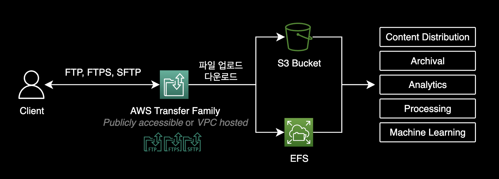
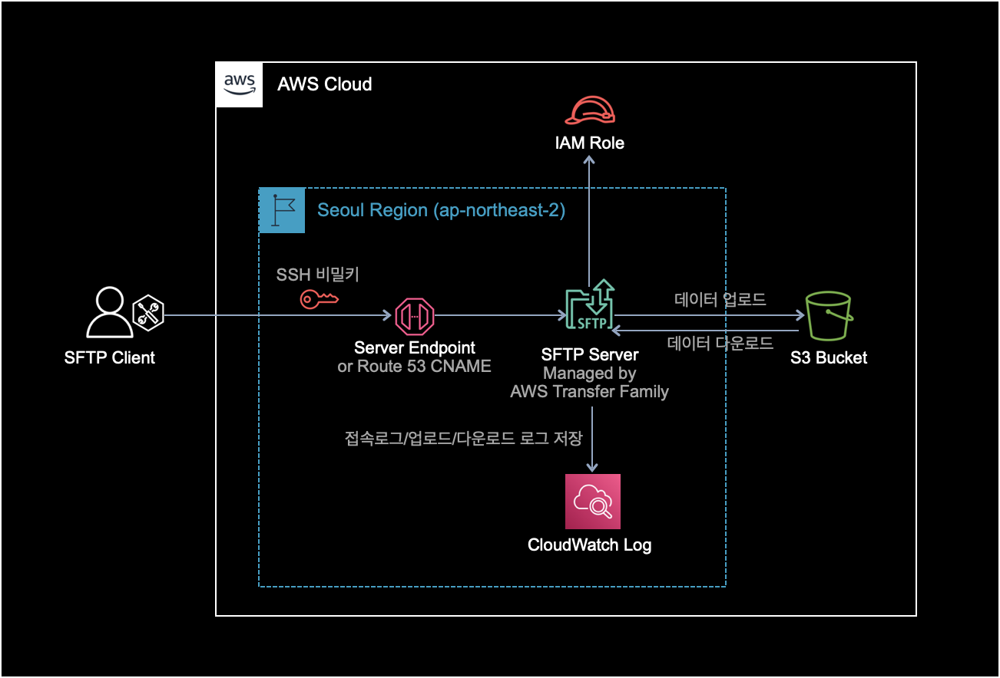
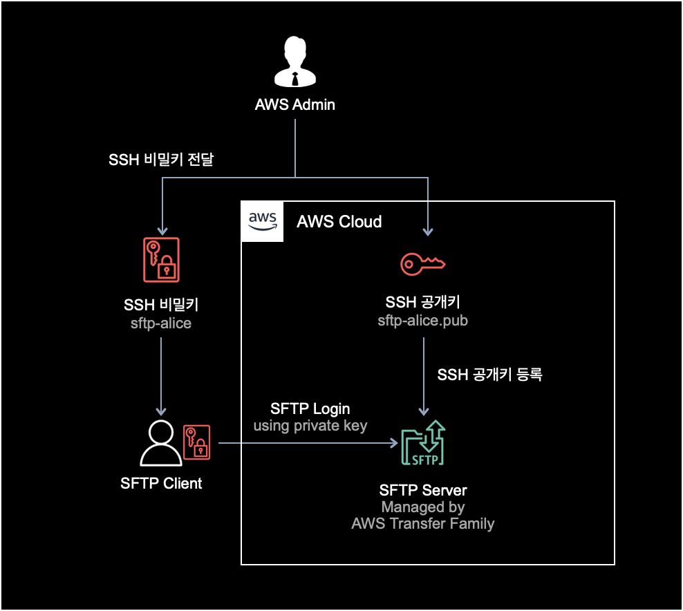
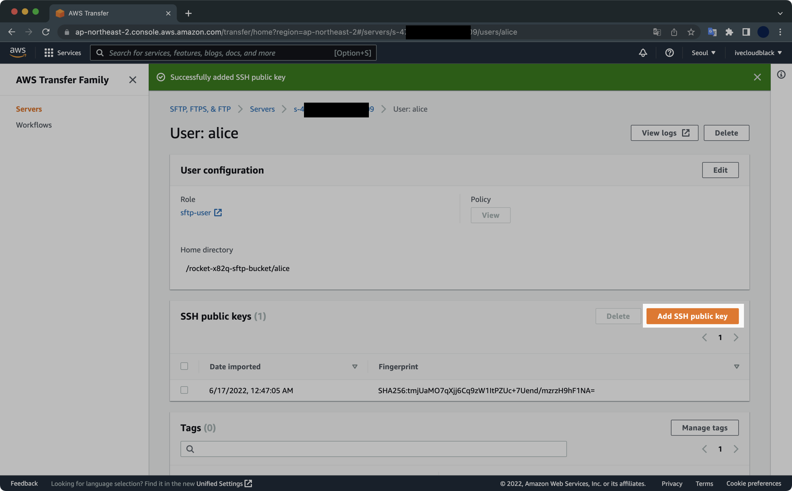
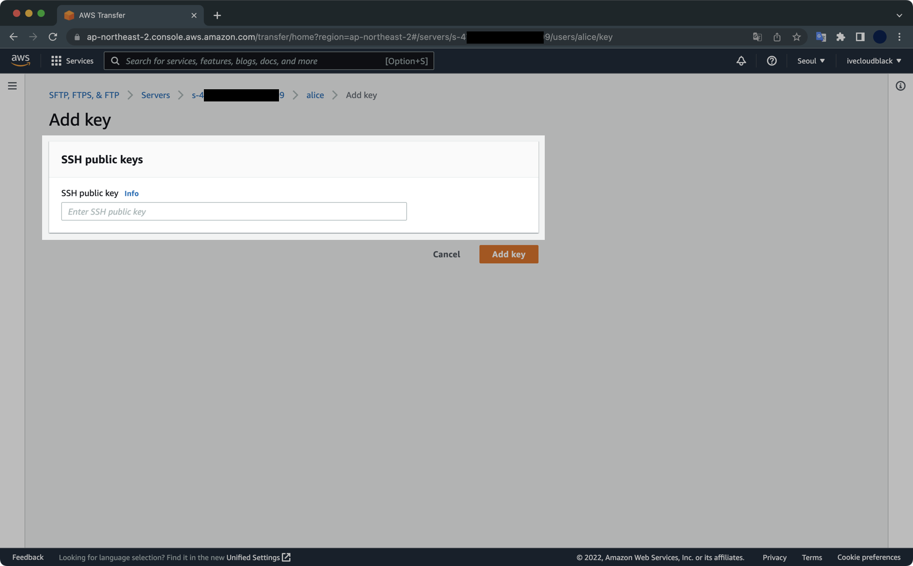
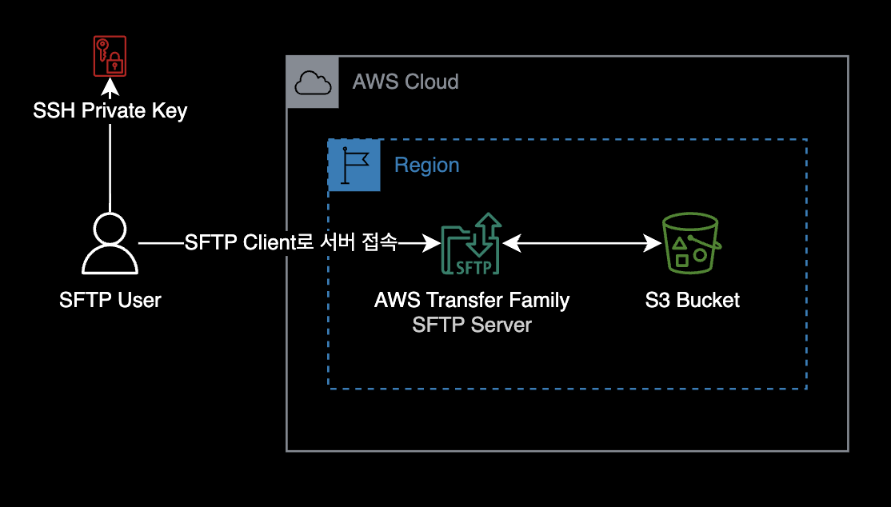
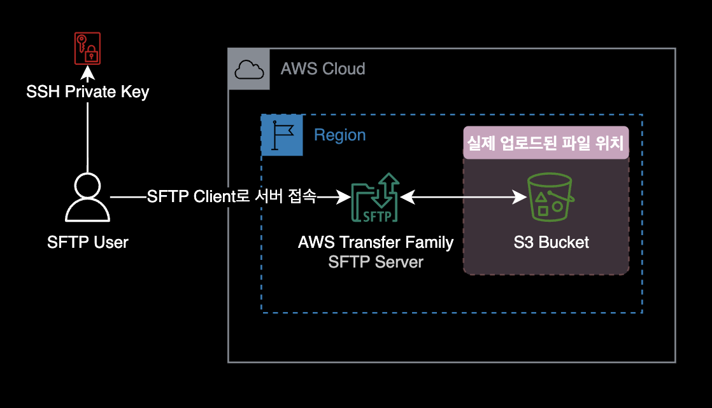

AWS Transfer Family 테라폼 구축하기
개요
테라폼을 사용해 AWS Transfer Family와 S3를 배포해서 서비스해보는 과정입니다.
배경지식
AWS Transfer Family
AWS Transfer Family는 FTP, FTPS, SFTP 서버의 관리형 서비스입니다.

AWS Transfer Family의 장단점
장점
-
관리형 서비스: AWS Transfer Family는 완전히 관리되는 서비스이므로 서버 관리 및 인프라 구성에 대한 부담이 없습니다. 이로 인해 개발자는 파일 전송에 집중할 수 있습니다.
-
확장성: AWS Transfer Family는 트래픽 규모에 따라 자동으로 인프라가 확장되므로 대량의 파일 전송 작업에 대해서도 높은 성능과 안정성을 유지할 수 있습니다.
-
다양한 프로토콜 지원: AWS Transfer Family는 FTP(파일 전송 프로토콜), FTPS(암호화된 파일 전송 프로토콜), SFTP(SSH 파일 전송 프로토콜) 등 다양한 프로토콜을 지원합니다. 이는 기존에 사용하던 프로토콜을 그대로 유지하면서 AWS Transfer Family로 전환할 수 있음을 의미합니다.
-
보안: AWS Transfer Family는 AWS Identity and Access Management(IAM)과 통합되어 강력한 보안을 제공합니다. SFTP 프로토콜의 경우, 클라이언트 키 기반의 인증을 통해 보안을 강화할 수 있습니다.
단점
-
가격: AWS Transfer Family는 데이터 전송 및 저장에 대한 비용을 부과합니다. 파일 전송 작업의 규모나 빈도에 따라 비용이 증가할 수 있습니다. 특히 대규모 파일 전송 작업을 수행하는 경우, 비용이 높아질 수 있으므로 이를 고려해야 합니다.
-
제한된 고급 기능: AWS Transfer Family는 기본적인 파일 전송 요구 사항을 충족시키는 데에는 탁월합니다. 하지만 고급 기능이나 특정 사용자 정의 요구 사항을 처리하기에는 제한적일 수 있습니다. 예를 들어, 복잡한 데이터 전송 룰, 자동화된 작업 스케줄링, 고급 보안 요구사항 등을 처리해야 하는 경우 AWS Transfer Family의 기능만으로는 한계가 있을 수 있습니다. 이 경우에는 보다 커스텀화된 파일전송 솔루션을 고려해야 할 수 있습니다.
테라폼으로 구성할 AWS 아키텍처는 다음과 같습니다.

Transfer Family 사용자가 SFTP 서버에 로그인할 때는 ID, Password 방식이 아닌 SSH 키페어 인증으로 로그인하게 됩니다.
환경
로컬 환경
- OS : macOS Monterey 12.4 (M1 Pro)
- Shell : zsh + oh-my-zsh
- Terraform v1.2.3
- AWS CLI 2.7.7
준비사항
- 테라폼이 설치되어 있어야 합니다.
- 테라폼으로 AWS 리소스를 배포하기 위해서 AWS CLI에 충분한 권한이 부여되어 있어야 합니다.
- AWS CLI가 설치되어 있어야 합니다.
Transfer Family 구성하기
테라폼 코드 다운로드
AWS Transfer Family 리소스 생성에 필요한 테라폼 코드 전체를 다운로드 받습니다.
다운로드 받은 terraform-codes.zip 파일을 압축해제합니다.
코드 구조
다운로드 받은 terraform-codes 디렉토리의 구조입니다.
.
└── terraform-codes
├── outputs.tf
├── provider.tf
├── route53.tf # Route 53
├── s3.tf # S3 Bucket
├── sftp-server-hostname.tf # SFTP Server
├── sftp-server-iam.tf # SFTP Server
├── sftp-server.tf # SFTP Server
├── transfer-user-iam.tf # SFTP User
├── transfer-user.tf # SFTP User
└── variables.tf # AWS Region
디렉토리 안에는 Transfer Family와 관련된 모든 AWS 리소스에 대한 테라폼 코드가 포함되어 있습니다.
- SFTP Server (AWS Transfer Family)
- IAM Role
- S3 Bucket
- Route 53
local-exec 설명
테라폼에서는 SFTP 서버 리소스에 대한 Hostname 설정을 지원하지 않습니다.
이런 이유 때문에 SFTP 서버 리소스에 대한 Custom Hostname 설정만 AWS Provider가 아닌 local-exec Provisioner + AWS CLI 조합을 사용합니다.
sftp-server-hostname.tf 파일이 SFTP 서버 리소스에 aws:transfer:customHostname 태그를 붙이면 Hostname 설정이 완료됩니다.
resource "null_resource" "service_managed_sftp_custom_hostname" {
depends_on = [aws_transfer_server.service_managed_sftp]
# 테라폼이 local-exec 프로비저너를 사용해서
# 로컬에서 직접 AWS CLI 명령어를 실행한다.
# 생성한 transfer family 서버 리소스에
# `aws:transfer:customHostname` 태그를 붙인다.
provisioner "local-exec" {
command = <<EOF
aws transfer tag-resource \
--arn '${aws_transfer_server.service_managed_sftp.arn}' \
--tags 'Key=aws:transfer:customHostname,Value=sftp.rocket.dev' \
--region 'ap-northeast-2'
EOF
}
}
코드 수정
테라폼으로 AWS 리소스를 생성하기 전에 각자 환경에 맞게 코드를 수정합니다.
S3 버킷 이름
S3 버킷은 글로벌 환경에서 유니크한 이름을 가져야 합니다.
variables.tf에서 S3 버킷 이름을 다른 사람과 겹치지 않도록 변경해주세요.
변경하지 않으면 버킷 이름이 중복되는 오류가 발생해 S3 버킷 생성에 실패하게 됩니다.
리전
디폴트 값으로 SFTP 서버가 서울 리전ap-northeast-2에 배포되도록 설정되어 있습니다.
리전 변경이 필요한 경우 variables.tf를 수정합니다.
AWS CLI 권한 확인
terraform init 명령어를 실행하기 전에 AWS CLI에 Administrator 권한이 부여되어 있어야 합니다.
AWS CLI에서 현재 자신이 어떤 IAM User를 사용하고 있는지 확인합니다.
$ aws sts get-caller-identity
{
"UserId": "AIDAXQOVWG6FYM3OPCLJX",
"Account": "111111111111",
"Arn": "arn:aws:iam::111111111111:user/tf-admin"
}
제가 사용할 IAM User인 tf-admin의 경우, AWS 관리형 정책인 AdministratorAccess이 부여되어 있습니다.
SFTP 인프라 구축
테라폼 배포
terraform init
충분한 AWS CLI의 권한이 부여된 상태에서 terraform-codes 디렉토리로 이동합니다.
테라폼 초기화를 실행합니다.
$ terraform init
terraform init 명령어에는 Terraform 구성 파일이 들어있는 작업 디렉토리를 초기화하고 Provider를 설치하는 등의 과정이 포함되어 있습니다.
terraform init 명령어를 수행하면 생성되는 .terraform.lock.hcl 파일에서 설정된 Terraform Provider 버전 정보를 확인할 수 있습니다.
$ cat .terraform.lock.hcl
# This file is maintained automatically by "terraform init".
# Manual edits may be lost in future updates.
provider "registry.terraform.io/hashicorp/aws" {
version = "4.19.0"
constraints = "~> 4.0"
...
}
provider "registry.terraform.io/hashicorp/null" {
version = "3.1.1"
constraints = "~> 3.1"
...
}
SFTP 인프라 구축을 위한 terraform provider는 두 가지를 사용합니다.
| Provider Name | Version | Description |
|---|---|---|
| hashicorp/aws | 4.19.0 | SFTP와 관련된 모든 AWS 리소스 생성 |
| hashicorp/null | 3.1.1 | SFTP 서버의 Custom Hostname 설정 |
null provider는 사용자의 로컬 터미널에서 AWS CLI를 실행해 SFTP 서버 리소스에 Custom Hostname 태그를 추가합니다.
자세한 동작방식은 sftp-server-hostname.tf 파일에서 확인할 수 있습니다.
terraform plan
terraform plan 명령어로 배포될 리소스들의 정보를 확인합니다.
$ terraform plan
terraform apply
이후 리소스 배포를 실시합니다.
$ terraform apply
...
Apply complete! Resources: 13 added, 0 changed, 0 destroyed.
Outputs:
bucket-name = "rocket-x82q-sftp-bucket"
sftp-server-endpoint = "s-993ae220554f4c50a.server.transfer.ap-northeast-2.amazonaws.com"
sftp-server-id = "s-993ae220554f4c50a"
sftp-username = "alice"
13개의 AWS 리소스를 문제없이 배포했습니다.
Route 53에 개인 소유 도메인이 없는 분들은 아쉽게도 sftp-server-endpoint 값으로 SFTP 서버에 로그인해야 합니다.
SSH 키 생성
테라폼으로 리소스 배포가 완료된 이후 SFTP Transfer 유저가 사용할 SSH 키페어를 생성합니다.
$ ssh-keygen -f sftp-alice
Generating public/private rsa key pair.
Enter passphrase (empty for no passphrase):
Enter same passphrase again:
Your identification has been saved in sftp-alice
Your public key has been saved in sftp-alice.pub
The key fingerprint is:
...
passphrase는 빈칸으로 입력 후 Enter 를 입력해서 키 페어를 생성합니다.
생성된 SSH 키 파일을 확인합니다.
$ ls sftp-alice*
sftp-alice sftp-alice.pub
비밀키 sftp-alice와 공개키 sftp-alice.pub이 생성된 걸 확인할 수 있습니다.
SFTP 유저의 SSH 키 등록
SFTP 유저가 서버에 접속하려면 SSH 키를 미리 SFTP 서버에 등록해야 합니다.

공개키의 내용을 확인하고 복사합니다.
$ cat sftp-alice.pub
ssh-rsa AAAAB3NzaC1yc2EAAAADAQABAAABgQCpmWwof7SgjqepEgFYkHEZEfR84Za7WBKM2b5wvWvPN4u/RcksOXXmn9LMEvLH6ZMx27tBq1Lh/fJet/QKLtntYBjS9WIwsgI2szJRYoiTxpbJOz6vuh13XIO8YUeirb4KLkpMbnj7vkAuU6BGJ5WHgTcVgzM1sPgqNLVxOHy4p2EmKkz1z3EDMolhUm9v0COMw4+8YW78HBizuBdLmIP23o9pNfnKBTtnNHtaIFhJi9f1OK4IvMM+n+sBikrA8mtmMPoTS+agsSFi+LIcqdj00cbm8KAcMtYImQSIjhcUGG+0aPjePOI0Qkj0D0+00GdIxGhJsgbRt+chDHfs1jWQ6ha0SK6Pl3ceQHLtb4mskhQQu78ObTVbt0VNsoRnzhdHVxgisVZGqGsJhY1ahbr0BZn//XrN7zfzRCU203qlbJc76GMWVM+SLNi3zOJYF/rbDJgpIoIwEvqppSrWQUfcPQo0VRxJY1suVd0ms0xeoWjd0sSbIhowBIcASJxQ0X0= xxxxx@xxxxxui-MacBookPro.local
AWS Management Console로 돌아가서 아까 생성한 SSH 공개키(sftp-alice.pub)를 Transfer User에 등록합니다.

공개키 sftp-alice.pub의 내용을 그대로 복사해서 넣어주세요.
그 후 [Add key] 버튼을 눌러 SSH 공개키를 등록합니다.

SFTP 서버 세팅이 끝났습니다.
SFTP 접속
이제 SFTP 사용자가 로컬 환경에 설치된 SFTP Client 프로그램을 사용해 서버에 접근하면 됩니다.

SFTP 접속 명령어는 다음과 같습니다.
$ sftp -i private_key_file sftp_username@sftp_server_endpoint
테라폼 코드를 실행하면 Route 53의 Zone과 Record가 생성됩니다.
그러나 제 경우는 개인 소유의 도메인이 없어서 SFTP에 접속할 때 도메인 대신 Server Endpoint로 접속하게 되었습니다.
Server Endpoint 주소는 terraform apply로 생성이 완료된 후 마지막 라인 Outputs에 자동 출력됩니다.
제 환경에서 실제 실행한 명령어는 아래와 같습니다.
$ sftp -i sftp-alice alice@s-4798bd8d19d646609.server.transfer.ap-northeast-2.amazonaws.com
SFTP 서버에 정상적으로 로그인하면 다음과 같은 메세지가 출력되면서 프롬프트가 sftp>로 변경됩니다.
Connected to s-4798bd8d19d646609.server.transfer.ap-northeast-2.amazonaws.com.
sftp>
SFTP 사용자가 최초 로그인했을 때 위치한 디렉토리 경로는 각 유저의 홈 디렉토리인 걸 확인할 수 있습니다.
sftp> pwd
Remote working directory: /rocket-x82q-sftp-bucket/alice
help 명령어를 실행해서 전체 SFTP 명령어 리스트를 확인할 수 있습니다.
sftp> help
Available commands:
bye Quit sftp
cd path Change remote directory to 'path'
chgrp [-h] grp path Change group of file 'path' to 'grp'
chmod [-h] mode path Change permissions of file 'path' to 'mode'
chown [-h] own path Change owner of file 'path' to 'own'
df [-hi] [path] Display statistics for current directory or
filesystem containing 'path'
exit Quit sftp
get [-afpR] remote [local] Download file
help Display this help text
lcd path Change local directory to 'path'
lls [ls-options [path]] Display local directory listing
lmkdir path Create local directory
ln [-s] oldpath newpath Link remote file (-s for symlink)
lpwd Print local working directory
ls [-1afhlnrSt] [path] Display remote directory listing
lumask umask Set local umask to 'umask'
mkdir path Create remote directory
progress Toggle display of progress meter
put [-afpR] local [remote] Upload file
pwd Display remote working directory
quit Quit sftp
reget [-fpR] remote [local] Resume download file
rename oldpath newpath Rename remote file
reput [-fpR] local [remote] Resume upload file
rm path Delete remote file
rmdir path Remove remote directory
symlink oldpath newpath Symlink remote file
version Show SFTP version
!command Execute 'command' in local shell
! Escape to local shell
? Synonym for help
파일 업로드 테스트
S3에 업로드를 테스트하기 위한 샘플 파일을 생성합니다.
$ echo "hello world." >> helloworld.txt
SFTP 서버에 다시 접속합니다.
로컬 파일시스템의 현재 경로에 있는 파일 목록을 조회합니다.
sftp> lls .
helloworld.txt
방금 로컬에 생성한 helloworld.txt 파일을 SFTP 서버에 업로드합니다.
sftp> put helloworld.txt helloworld.txt
Uploading helloworld.txt to /rocket-x82q-sftp-bucket/alice/helloworld.txt
helloworld.txt 100% 13 1.0KB/s 00:00
위와 같이 100% 출력이 되며 파일 업로드가 완료됩니다.
실제 파일이 저장되는 장소는 백엔드 스토리지인 S3 버킷이라는 사실을 명심해야 합니다.

ls 명령어로 파일이 S3에 업로드된 걸 확인할 수 있습니다.
sftp> ls
helloworld.txt
SFTP 서버를 빠져나온 다음, AWS CLI에서 S3 버킷 안에 들어있는 오브젝트를 확인합니다.
sftp> exit
$ aws s3 ls s3://rocket-x82q-sftp-bucket/alice/
2022-06-17 03:10:51 13 helloworld.txt
S3 버킷에 파일이 업로드된 걸 확인할 수 있습니다.
실습환경 정리
terraform destroy
실습이 종료된 후에는 비용 청구가 발생하는 걸 방지하기 위해 테라폼으로 생성한 리소스를 모두 삭제합니다.
$ terraform destroy
AWS Transfer Family의 SFTP 서버가 저렴한 비용은 아닙니다.
실습이 끝난 후에는 반드시 테라폼으로 생성한 모든 AWS 리소스를 삭제해주세요.
참고자료
SFTP 엔드포인트 비용이 1시간당 $0.30 입니다. 굉장히 부담스러운 가격입니다.